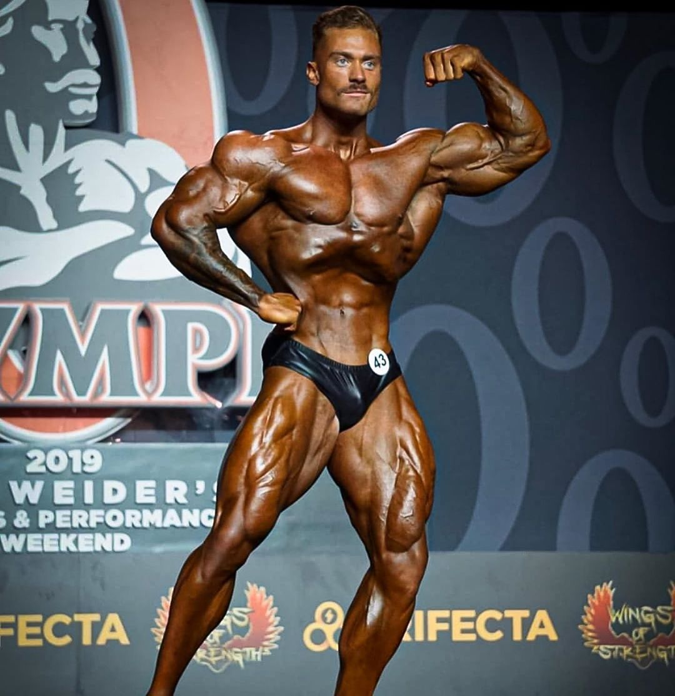

Chris Bumstead
Christopher Adam Bumstead é um fisiculturista profissional canadense da IFBB. Bumstead é o atual vencedor do Mr. Olympia Classic Physique, tendo vencido a competição em 2019, 2020, 2021 e 2022. Ele também foi vice-campeão em 2017 e 2018. Ele é frequentemente referido pelo apelido Cbum.